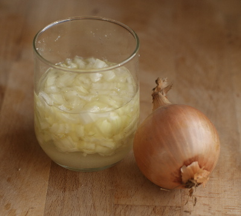

Zunaechst eine grosse Zwiebel in feine Stuecke schneiden. Dann sieben grosse Loeffel Zucker oder Honig hinzugeben und ueber Nacht mindestens 12 Stunden ziehen lassen. Nun kann der Zwiebelsaft abgeseiht werden und fuer hoechstens fuenf Wochen im Kuelhschrank gelagert werden. Alle sechs Stunden einen grossen Essloeffel zu sich nehmen.
Zwei Zwiebeln grob hacken, mit 200 ml kochendem Wasser uebergiessen und eine Viertelstunde ziehen lassen. Dann ein Kuechenhandtuch darin eintauchen und in einen Wollschal wickeln. Wickel um den Hals legen und ca. 30 min einwirken lassen.
Frischen oder getrockneten Salbei mit kochendem Wasser uebergiessen und mindestens 20 Minuten ziehen lassen. Viermal taeglich eine Tasse trinken. Mit dem kalten oder lauwarmen Tee kann ausserdem gegurgelt werden.
Zwei Zwiebeln grob hacken, mit 200 ml kochendem Wasser uebergiessen und eine Viertelstunde ziehen lassen. Dann ein Kuechenhandtuch darin eintauchen und in einen Wollschal wickeln. Wickel um den Hals legen und ca. 30 min einwirken lassen.